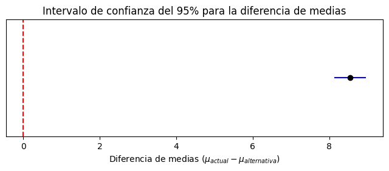

Complementaria Semana 16: Muestreo independiente, pruebas pareadas y control de error tipo I y II en decisiones.#
Comparación de alternativas bajo incertidumbre#
En estudios de simulación de eventos discretos, las medidas de desempeño obtenidas a partir de un modelo son variables aleatorias, debido a la presencia de entradas estocásticas. Por esta razón, la comparación entre distintas alternativas no puede realizarse únicamente comparando promedios, sino que debe apoyarse en herramientas de inferencia estadística que permitan cuantificar la incertidumbre asociada a los resultados.
En efecto, dos alternativas pueden presentar medias muestrales distintas en una simulación, pero esa diferencia podría deberse únicamente a la variabilidad aleatoria y no a una mejora real del sistema. Por lo tanto, basarse exclusivamente en promedios puede conducir a conclusiones erróneas.
El siguiente ejemplo ilustra esta situación. Supóngase que se comparan dos alternativas y, a partir de un conjunto reducido de réplicas, se obtiene que una de ellas tiene un promedio menor. A primera vista, esto sugeriría que dicha alternativa es mejor. Sin embargo, al considerar la variabilidad de los datos mediante un intervalo de confianza, puede observarse que la diferencia no es estadísticamente significativa, por lo que no es posible afirmar que una alternativa supere a la otra.
En esta primera sección de la complementaria se presenta el procedimiento para comparar dos alternativas bajo incertidumbre utilizando:
muestreo independiente, y
muestreo dependiente, también conocido como pruebas pareadas.
Se describen los supuestos, las ecuaciones necesarias para la construcción de intervalos de confianza y los criterios de decisión, y finalmente se aplica la metodología a un caso práctico.
1. Comparación de alternativas bajo incertidumbre#
Sea (W) una medida de desempeño del sistema (por ejemplo, tiempo promedio en el sistema).
Al simular un sistema, se obtienen observaciones aleatorias de (W), por lo que su valor verdadero
solo puede estimarse a partir de un conjunto de réplicas.
Cuando se comparan dos alternativas, el objetivo es estimar la diferencia entre sus desempeños promedio:
y determinar si dicha diferencia es estadísticamente significativa.
1.1. Muestreo independiente#
En el muestreo independiente, las réplicas de cada alternativa se generan utilizando secuencias de números aleatorios distintas. En este caso, las observaciones de ambos sistemas son independientes.
Sean:
(Y_1): desempeño del sistema 1 (actual)
(Y_2): desempeño del sistema 2 (alternativa)
(R_1, R_2): número de réplicas de cada sistema
Denotemos:
y las varianzas muestrales:
Evaluación de la igualdad de varianzas#
En el caso de muestreo independiente (NO PRUEBAS PAREADAS), antes de construir el intervalo de confianza para la diferencia de medias es necesario evaluar si puede asumirse que las varianzas poblacionales de ambas alternativas son iguales, es decir,
Para ello, se construye un intervalo de confianza para el cociente de varianzas
utilizando la distribución F. A partir de las varianzas muestrales \(S_1^2\) y \(S_2^2\), el intervalo se obtiene como
Si (1) está dentro, no hay evidencia para afirmar que son distintas (se puede asumir igualdad).
Si (1) no está dentro, se asume varianzas diferentes.
1.1.1 Intervalo de confianza con varianzas iguales#
Si se asume
se usa la varianza combinada:
El intervalo de confianza para
es:
1.1.2 Intervalo de confianza con varianzas distintas#
Si no se puede asumir igualdad de varianzas, se usa el intervalo :
donde los grados de libertad aproximados \(\nu\) son:
1.2 Pruebas pareadas#
En lugar de comparar medias por separado, se analiza la diferencia réplica a réplica:
y se estima la media de las diferencias:
1.2.1 Intervalo de confianza (pareado)#
Sea (R) el número de réplicas. La desviación estándar muestral de las diferencias es:
El intervalo de confianza es:
1.3. Criterio de decisión#
Si el intervalo de confianza contiene el valor cero, no existe evidencia estadística suficiente para afirmar que las alternativas difieren en su desempeño promedio.
Si el intervalo de confianza no contiene el valor cero, se concluye que existe una diferencia estadísticamente significativa entre las alternativas.
El signo de la diferencia indica cuál alternativa presenta mejor desempeño.
En métricas de tiempo, menor valor implica mejor desempeño. Por ende, si la medida de desempeño considerada es el tiempo promedio (W), un menor valor de (W) implica un mejor desempeño del sistema. En particular, cuando el intervalo de confianza para la diferencia de medias
es completamente positivo, se cumple que
lo que implica que
Por lo tanto, la alternativa reduce el tiempo promedio en el sistema y mejora el desempeño del proceso.
1.4. Precisión de la comparación: half-width#
Además del criterio de decisión basado en el intervalo de confianza, es posible evaluar la precisión de la comparación entre alternativas mediante el half-width (HW) del intervalo.
El half-width se define como:
y representa la mitad del ancho del intervalo de confianza. Un menor valor de (HW) indica una estimación más precisa de la diferencia de medias.
En particular, el uso de pruebas pareadas suele inducir una correlación positiva entre las observaciones de ambas alternativas, lo que reduce la varianza del estimador de la diferencia. Como consecuencia, el half-width del intervalo de confianza suele ser menor que en el caso de muestreo independiente. Esta reducción en el half-width indica una comparación más eficiente, aunque la decisión sobre cuál alternativa es mejor sigue basándose exclusivamente en la posición del intervalo de confianza respecto al valor cero.
1.5 Ejercicio práctico: comparación de alternativas bajo incertidumbre#
En este ejercicio se comparan dos alternativas de un sistema de atención migratoria: el escenario actual y una alternativa que incorpora lectores automáticos de pasaportes. La medida de desempeño considerada es el tiempo promedio en el sistema (W), medido en minutos.
Los valores de (W) corresponden a resultados obtenidos previamente mediante simulación, utilizando un número finito de réplicas. El objetivo es determinar, mediante herramientas estadísticas, si la alternativa propuesta mejora el desempeño del sistema.
import numpy as np
from scipy import stats
import math
1.5.1 Análisis de muestreo independiente#
Paso 1: Datos#
A continuación se ingresan los tiempos promedio en el sistema (W) (minutos) obtenidos a partir de 100 réplicas para:
Escenario actual
Alternativa con lectores automáticos
En este ejercicio se asume que estos valores ya fueron estimados por simulación (utilizando las semillas y parámetros indicados en el modelo), por lo que el análisis se enfoca en la comparación estadística de alternativas.
np.random.seed(42)
# Datos preliminares usados como referencia
w_actual_base = np.array([12.66473282, 7.843314626, 9.21198858, 8.438766978, 12.35851599])
w_alt_base = np.array([1.356, 1.281, 1.635, 1.130, 1.170])
# Estimación de parámetros a partir de las réplicas preliminares
media_actual_base = w_actual_base.mean()
media_alt_base = w_alt_base.mean()
desv_actual_base = w_actual_base.std(ddof=1)
desv_alt_base = w_alt_base.std(ddof=1)
# Generación de 100 réplicas
w_actual = np.random.normal(media_actual_base, desv_actual_base, 100)
w_alt = np.random.normal(media_alt_base, desv_alt_base, 100)
w_actual, w_alt
(array([11.222989 , 9.79183513, 11.56326444, 13.53616305, 9.57571438,
9.57575139, 13.66279169, 11.83315584, 9.04533328, 11.32631931,
9.05898423, 9.05377316, 10.64881339, 5.79119399, 6.21573689,
8.83614525, 7.82068214, 10.81173395, 8.05690276, 6.92032603,
13.40683399, 9.59459515, 10.25566306, 6.89227788, 8.87650021,
10.35346802, 7.50928301, 10.95023532, 8.74970703, 9.44602631,
8.74730008, 14.27824337, 10.07304292, 7.71952924, 11.95736659,
7.35185058, 10.57421354, 5.6866376 , 7.10991562, 10.54716187,
11.76786563, 10.48970427, 9.84280852, 9.42481759, 6.77107914,
8.48103423, 9.06524754, 12.48607151, 10.87793203, 6.12981443,
10.83390437, 9.23554145, 8.57777497, 11.4820978 , 12.42719453,
12.20244075, 8.21198324, 9.40654175, 10.85008589, 12.30220798,
9.02347115, 9.68501407, 7.60993734, 7.40737904, 11.93478495,
13.16024178, 9.94116292, 12.36528855, 10.91854153, 8.64945284,
10.91799965, 13.56998611, 10.02271685, 13.62995482, 4.19891963,
11.95591869, 10.29965589, 9.42954247, 10.31027993, 5.62375758,
9.60835366, 10.90834628, 13.43443316, 8.9353542 , 8.28123072,
8.97257262, 12.16665393, 10.84442346, 8.90945736, 11.26029781,
10.32226321, 12.28665602, 8.52113295, 9.36495851, 9.2197061 ,
6.80490294, 10.77087806, 10.69184638, 10.11498882, 9.57473675]),
array([1.03089697, 1.23014347, 1.24575325, 1.15370144, 1.28209398,
1.39533261, 1.69220873, 1.34936846, 1.36598812, 1.29948826,
0.93006433, 1.30908919, 1.32646429, 1.80779484, 1.27586952,
1.37480084, 1.30744713, 1.08031026, 1.54331086, 1.46501446,
1.47284609, 1.13224695, 1.59538394, 1.033605 , 1.43194925,
1.75315488, 1.11599258, 1.20096885, 1.33436047, 1.21355231,
1.00379743, 1.32813337, 1.10161736, 1.40926199, 1.13023655,
1.62485654, 1.157512 , 1.24989011, 1.47734996, 1.06785416,
1.35996091, 1.57622464, 0.99241625, 1.35138272, 1.36645531,
1.47100148, 1.06663504, 1.04990855, 1.41894647, 1.37388693,
1.36457447, 1.38379462, 1.17818899, 1.36092112, 1.3731033 ,
1.17131325, 1.68812027, 1.40931017, 1.07577831, 1.44590967,
1.11916832, 1.47205542, 1.54647019, 1.15001485, 1.50736715,
1.39708127, 1.47906113, 1.69433336, 1.26524802, 1.16342437,
1.13622757, 1.15099074, 1.29895629, 1.38273377, 1.369822 ,
1.4800873 , 1.31700432, 1.60554727, 1.26138844, 1.8592581 ,
1.43972306, 1.14270875, 1.099897 , 1.41104068, 1.26963973,
1.45741646, 1.40919093, 1.29981215, 1.14478466, 1.01097153,
1.22496171, 1.48593927, 1.35728362, 1.06487476, 1.34908866,
1.39158023, 1.13736069, 1.3451916 , 1.32605938, 1.0854596 ]))
Se comienza analizando el caso de muestreo independiente en el cual las réplicas de ambas alternativas se asumen generadas con secuencias de números aleatorios independientes. En este contexto, antes de construir el intervalo de confianza para la diferencia de medias, es necesario evaluar si puede asumirse igualdad de varianzas
Paso 2: Evaluación de igualdad de varianzas#
Dado que las varianzas poblacionales (parámetro sigma) son desconocidas, para evaluar si puede asumirse igualdad de varianzas, se construye un intervalo de confianza del 95% para el cociente de varianzas utilizando la distribución F. Si el valor 1 pertenece al intervalo, se puede asumir igualdad de varianzas; de lo contrario, se concluye que las varianzas son diferentes.
# Estadísticos básicos
R1 = len(w_actual)
R2 = len(w_alt)
mean1 = w_actual.mean()
mean2 = w_alt.mean()
S_1_2 = w_actual.var(ddof=1)
S_2_2 = w_alt.var(ddof=1)
mean1, mean2, S_1_2, S_2_2
alpha = 0.05
df1 = R1 - 1
df2 = R2 - 1
ratio = S_1_2 / S_2_2
F_low = stats.f.ppf(alpha/2, df2, df1)
F_high = stats.f.ppf(1 - alpha/2, df2, df1)
# Intervalo de confianza para sigma1^2 / sigma2^2
L_var = ratio / F_high
U_var = ratio / F_low
ratio, (L_var, U_var), (L_var <= 1 <= U_var)
S_1_2 , S_2_2
(np.float64(4.189743889344006), np.float64(0.03648970035192347))
El intervalo de confianza para la razón de varianzas no contiene el valor 1, por lo que se concluye que las varianzas poblacionales de ambas alternativas son diferentes. En consecuencia, se utiliza el intervalo de confianza para varianzas desconocidas pero diferentes, para la diferencia de medias.
Paso 3: Se aplica el IC para diferencia de medias para varianzas diferentes#
# Intervalo de confianza para la diferencia de medias
# 1) Estimación puntual de (mu1 - mu2)
diff = mean1 - mean2
# 2) Error estándar
se = math.sqrt(S_1_2 / R1 + S_2_2 / R2)
# 3) Grados de libertad aproximados de Welch-Satterthwaite
nu_num = (S_1_2 / R1 + S_2_2 / R2)**2
nu_den = ((S_1_2 / R1)**2) / (R1 - 1) + ((S_2_2 / R2)**2) / (R2 - 1)
nu = math.floor(nu_num / nu_den)
# 4) Valor crítico t
tcrit = stats.t.ppf(1 - alpha/2, nu)
# 5) Half-width
hw_ind = tcrit * se
# 6) IC final
L_ind = diff - hw_ind
U_ind = diff + hw_ind
diff, (L_ind, U_ind), hw_ind
(np.float64(8.550540394168673),
(np.float64(8.142679392078493), np.float64(8.958401396258852)),
np.float64(0.4078610020901798))
El intervalo de confianza del 95% para la diferencia de medias
es completamente positivo y no contiene el valor cero, es decir,
Por lo tanto, se concluye que existe una diferencia estadísticamente significativa entre las alternativas. Además, al cumplirse que
se tiene que
Dado que la métrica considerada es el tiempo promedio en el sistema, un menor valor de (W) implica un mejor desempeño. En consecuencia, el escenario con lectores automáticos presenta un mejor desempeño que el escenario actual.
Paso 4: Visualización del intervalo de confianza#
import matplotlib.pyplot as plt
plt.figure(figsize=(8, 2.5))
plt.hlines(y=0, xmin=L_ind, xmax=U_ind, color='blue')
plt.plot(diff, 0, 'o', color='black')
plt.axvline(x=0, linestyle='--', color='red')
plt.yticks([])
plt.xlabel(r"Diferencia de medias $(\mu_{actual} - \mu_{alternativa})$")
plt.title("Intervalo de confianza del 95% para la diferencia de medias")
plt.show()

1.5.2 Análisis mediante pruebas pareadas#
Se analiza ahora el caso en el que las observaciones de ambas alternactivas están emparejadas y la comparación se realiza sobre la variable diferencia
En el contexto de pruebas pareadas, es fundamental que las observaciones de ambas alternativas se generen utilizando la misma secuencia de números aleatorios, con el fin de inducir correlación entre las réplicas correspondientes. Esto permite que las diferencias observadas reflejen principalmente el efecto de las alternativas, reduciendo la influencia del ruido aleatorio.
Paso 1: Datos#
np.random.seed(42)
# Datos base (réplicas preliminares)
w_actual_base = np.array([
12.66473282,
7.843314626,
9.21198858,
8.438766978,
12.35851599
])
w_alt_base = np.array([
1.554471186,
1.453586058,
1.346113122,
1.5570207,
1.497546971
])
# Estimación de parámetros
media_actual = w_actual_base.mean()
media_alt = w_alt_base.mean()
std_actual = w_actual_base.std(ddof=1)
std_alt = w_alt_base.std(ddof=1)
n = 100
#generación de numeros aleatorios correlacionados
z = np.random.normal(0, 1, n)
# Generación de réplicas correlacionadas
w_actual = media_actual + std_actual * z
w_alt = media_alt + std_alt * z
w_actual, w_alt
(array([11.222989 , 9.79183513, 11.56326444, 13.53616305, 9.57571438,
9.57575139, 13.66279169, 11.83315584, 9.04533328, 11.32631931,
9.05898423, 9.05377316, 10.64881339, 5.79119399, 6.21573689,
8.83614525, 7.82068214, 10.81173395, 8.05690276, 6.92032603,
13.40683399, 9.59459515, 10.25566306, 6.89227788, 8.87650021,
10.35346802, 7.50928301, 10.95023532, 8.74970703, 9.44602631,
8.74730008, 14.27824337, 10.07304292, 7.71952924, 11.95736659,
7.35185058, 10.57421354, 5.6866376 , 7.10991562, 10.54716187,
11.76786563, 10.48970427, 9.84280852, 9.42481759, 6.77107914,
8.48103423, 9.06524754, 12.48607151, 10.87793203, 6.12981443,
10.83390437, 9.23554145, 8.57777497, 11.4820978 , 12.42719453,
12.20244075, 8.21198324, 9.40654175, 10.85008589, 12.30220798,
9.02347115, 9.68501407, 7.60993734, 7.40737904, 11.93478495,
13.16024178, 9.94116292, 12.36528855, 10.91854153, 8.64945284,
10.91799965, 13.56998611, 10.02271685, 13.62995482, 4.19891963,
11.95591869, 10.29965589, 9.42954247, 10.31027993, 5.62375758,
9.60835366, 10.90834628, 13.43443316, 8.9353542 , 8.28123072,
8.97257262, 12.16665393, 10.84442346, 8.90945736, 11.26029781,
10.32226321, 12.28665602, 8.52113295, 9.36495851, 9.2197061 ,
6.80490294, 10.77087806, 10.69184638, 10.11498882, 9.57473675]),
array([1.52504599, 1.46969516, 1.53820636, 1.61450953, 1.46133655,
1.46133798, 1.61940697, 1.54864459, 1.44082371, 1.52904235,
1.44135167, 1.44115013, 1.50283936, 1.31496771, 1.33138719,
1.43273322, 1.39345951, 1.50914042, 1.4025955 , 1.35863764,
1.60950764, 1.46206678, 1.48763401, 1.35755286, 1.43429398,
1.49141669, 1.38141595, 1.51449706, 1.42939017, 1.45632078,
1.42929708, 1.64320997, 1.48057106, 1.38954736, 1.55344853,
1.37532714, 1.49995417, 1.31092393, 1.36597015, 1.49890792,
1.54611945, 1.49668571, 1.47166659, 1.45550052, 1.35286542,
1.41899907, 1.44159391, 1.57389654, 1.51170068, 1.32806408,
1.50999788, 1.44818014, 1.42274058, 1.53506719, 1.57161943,
1.56292693, 1.40859334, 1.45479369, 1.51062371, 1.5667855 ,
1.43997818, 1.46556379, 1.38530882, 1.37747474, 1.55257517,
1.59997052, 1.47547051, 1.56922518, 1.51327128, 1.42551277,
1.51325032, 1.61581766, 1.47862467, 1.61813698, 1.25338545,
1.55339253, 1.48933547, 1.45568325, 1.48974636, 1.308492 ,
1.46259889, 1.51287697, 1.61057506, 1.43657019, 1.41127154,
1.43800964, 1.56154285, 1.51040471, 1.43556862, 1.52648893,
1.49020982, 1.56618401, 1.42054991, 1.45318543, 1.44756769,
1.35417358, 1.5075603 , 1.50450369, 1.48219335, 1.46129874]))
Se sigue el procedimiento enunciado en pasos anteriores para pruebas pareadas
# Diferencias pareadas
d = w_actual - w_alt
R = len(d)
# 1) Promedio de diferencias
dbar = d.mean()
# 2) Desviación estándar de las diferencias
sd = d.std(ddof=1)
# 3) Error estándar
se_d = sd / math.sqrt(R)
# 4) Grados de libertad
df = R - 1
# 5) Valor crítico t
alpha = 0.05
tcrit = stats.t.ppf(1 - alpha/2, df)
# 6) Half-width
hw_par = tcrit * se_d
# 7) Intervalo de confianza
L_par = dbar - hw_par
U_par = dbar + hw_par
dbar
print("El intervalo de confianza IC es:", (L_par, U_par), "con HW:", hw_par)
El intervalo de confianza IC es: (np.float64(8.006274047820435), np.float64(8.787151398903175)) con HW: 0.3904386755413703
El intervalo de confianza del 95% para la media de las diferencias es completamente positivo y no contiene el valor cero. En consecuencia, se concluye que la alternativa con lectores automáticos reduce significativamente el tiempo promedio en el sistema y mejora el desempeño del proceso de migración.
Adicionalmente, se observa que el half-width del intervalo de confianza bajo pruebas pareadas es menor que en el caso de muestreo independiente, lo que indica una mayor precisión en la estimación de la diferencia de desempeño.
1.5.3 Conclusión general#
Tanto bajo muestreo independiente como mediante pruebas pareadas con números aleatorios comunes, los intervalos de confianza obtenidos no contienen el valor cero y son completamente positivos. Por lo tanto, se concluye que la alternativa con lectores automáticos presenta un mejor desempeño que el escenario actual, al reducir el tiempo promedio en el sistema.
2. Control de error tipo I y II en decisiones#
En la comparación de sistemas bajo incertidumbre, la decisión estadística se basa en muestras aleatorias, por lo que siempre existe riesgo de error.
Planteamiento:
\(H_0: \mu_1 - \mu_2 = 0\)
\(H_1: \mu_1 - \mu_2 \neq 0\)
Regla de decisión utilizada en esta complementaria:
Rechazar \(H_0\) si el intervalo de confianza para \(\mu_1 - \mu_2\) no contiene 0.
No rechazar \(H_0\) si el intervalo de confianza contiene 0.
2.1 Error Tipo I y Error Tipo II#
Error Tipo I (\(\alpha\)):
Rechazar \(H_0\) cuando \(H_0\) es verdadera.
Error Tipo II (\(\beta\)):
No rechazar \(H_0\) cuando \(H_0\) es falsa.
Poder estadístico:
2.2 Estimación empírica de \(\alpha\) y \(\beta\) (Monte Carlo)#
Para mantener coherencia con la sección anterior, se utiliza simulación Monte Carlo y la misma regla de decisión basada en intervalos de confianza.
Cuando \(H_0\) es verdadera, la proporción de rechazos estima el error Tipo I (\(\alpha\)).
Cuando \(H_0\) es falsa, la proporción de rechazos estima el poder estadístico, y por tanto \(\beta = 1 - \text{Poder}\).
2.3 Regla de decisión basada en el intervalo de confianza de Welch#
En esta complementaria, la decisión estadística se toma usando un intervalo de confianza bilateral para la diferencia de medias \((\mu_1 - \mu_2)\) construido con el método de Welch (varianzas desconocidas y no necesariamente iguales).
La regla es:
Se calcula el intervalo de confianza para \((\mu_1 - \mu_2)\).
Se rechaza \(H_0\) si el intervalo NO contiene el valor 0.
No se rechaza \(H_0\) si el intervalo sí contiene 0.
2.4 Estimación empírica mediante simulación Monte Carlo#
Para estimar empíricamente el error Tipo I (\(\alpha\)) y el poder estadístico, se utiliza simulación Monte Carlo.
El procedimiento es:
Repetir \(N\) experimentos independientes.
En cada experimento:
Generar dos muestras normales de tamaño \(R\):
Muestra 1 \(\sim \mathcal{N}(\mu_1, \sigma_1)\)
Muestra 2 \(\sim \mathcal{N}(\mu_2, \sigma_2)\)
Construir el intervalo de confianza de Welch para \((\mu_1 - \mu_2)\).
Aplicar la regla de decisión: rechazar \(H_0\) si el intervalo no contiene 0.
La proporción de rechazos estimada se calcula como:
Si se simula el caso \(\mu_1 = \mu_2\), entonces \(\hat{p}\) estima el error Tipo I (\(\alpha\)).
Si se simula el caso \(\mu_1 \neq \mu_2\), entonces \(\hat{p}\) estima el poder y se obtiene:
3. Evaluación empírica del Error Tipo I (α), Poder Estadístico y Error Tipo II (β)#
3.1 Contexto del análisis#
Se analiza la comparación del tiempo promedio en el sistema (\(W\)) entre dos configuraciones:
Sistema actual
Sistema alternativo
El objetivo es determinar si existe una diferencia estadísticamente significativa entre ambos desempeños.
Se plantea el contraste de hipótesis:
donde:
\(\mu_1\): tiempo promedio del sistema actual
\(\mu_2\): tiempo promedio del sistema alternativo
El procedimiento de decisión se basa en un intervalo de confianza tipo Welch con nivel de significancia:
Para evaluar el comportamiento del procedimiento estadístico, se realiza una simulación Monte Carlo.
3.1.1 Estimación empírica del Error Tipo I (\(\alpha\))#
Para estimar el error Tipo I se simula el caso en que la hipótesis nula es verdadera, es decir:
\(\mu_1 = 10\)
\(\mu_2 = 10\)
\(\sigma_1 = \sigma_2 = 1.5\)
Se generan muestras de tamaño:
\(R = 5\) réplicas por experimento
y se repite el experimento:
\(N = 20000\) veces
La proporción de rechazos obtenida estima la probabilidad de rechazar \(H_0\) cuando esta es verdadera.
En este contexto, el error Tipo I representa la probabilidad de concluir que el sistema alternativo es diferente del actual cuando en realidad no lo es.
import numpy as np
from scipy import stats
import math
# Parámetros
alpha = 0.05
R = 5
N = 20000
mu1 = 10
mu2 = 10
s1 = 1.5
s2 = 1.5
semilla = 1
rng = np.random.default_rng(semilla)
rechazos = 0
for _ in range(N):
# 1) Generar muestras normales independientes
muestra_1 = rng.normal(mu1, s1, R)
muestra_2 = rng.normal(mu2, s2, R)
# 2) Calcular medias y varianzas muestrales
media_1 = np.mean(muestra_1)
media_2 = np.mean(muestra_2)
var_1 = np.var(muestra_1, ddof=1)
var_2 = np.var(muestra_2, ddof=1)
# 3) Diferencia de medias
diferencia = media_1 - media_2
# 4) Error estándar (Welch)
error_estandar = math.sqrt(var_1/R + var_2/R)
# 5) Grados de libertad (Welch–Satterthwaite)
gl = (var_1/R + var_2/R)**2 / (
(var_1**2)/(R**2 * (R-1)) +
(var_2**2)/(R**2 * (R-1))
)
# 6) Valor crítico t
t_critico = stats.t.ppf(1 - alpha/2, math.floor(gl))
# 7) Intervalo de confianza
LI = diferencia - t_critico * error_estandar
LS = diferencia + t_critico * error_estandar
# 8) Regla de decisión: rechazar si 0 NO está en el intervalo
if not (LI <= 0 <= LS):
rechazos += 1
alpha_empirico = rechazos / N
alpha_empirico
0.03955
3.1.2 Estimación empírica del Poder y del Error Tipo II (\(\beta\))#
Ahora se simula un escenario donde existe una diferencia real entre los sistemas:
\(\mu_1 = 10\)
\(\mu_2 = 9\)
\(\sigma_1 = \sigma_2 = 1.5\)
Es decir, el sistema alternativo reduce en 1 unidad el tiempo promedio.
Se mantiene:
Tamaño de muestra: \(R = 5\)
Número de experimentos: \(N = 20000\)
Nivel de significancia: \(\alpha = 0.05\)
Semilla: 2027
La proporción de rechazos estima el poder estadístico, definido como:
Mientras que el error Tipo II es:
y representa la probabilidad de no detectar una diferencia cuando esta realmente existe.
# Cambiamos solo mu2 (ahora hay diferencia real)
mu1 = 10
mu2 = 9
R = 100
rng = np.random.default_rng(1)
rechazos = 0
for _ in range(N):
muestra_1 = rng.normal(mu1, s1, R)
muestra_2 = rng.normal(mu2, s2, R)
media_1 = np.mean(muestra_1)
media_2 = np.mean(muestra_2)
var_1 = np.var(muestra_1, ddof=1)
var_2 = np.var(muestra_2, ddof=1)
diferencia = media_1 - media_2
error_estandar = math.sqrt(var_1/R + var_2/R)
gl = (var_1/R + var_2/R)**2 / (
(var_1**2)/(R**2 * (R-1)) +
(var_2**2)/(R**2 * (R-1))
)
t_critico = stats.t.ppf(1 - alpha/2, math.floor(gl))
LI = diferencia - t_critico * error_estandar
LS = diferencia + t_critico * error_estandar
if not (LI <= 0 <= LS):
rechazos += 1
poder_empirico = rechazos / N
beta_empirico = 1 - poder_empirico
poder_empirico, beta_empirico
(0.9971, 0.0029000000000000137)
Aunque el procedimiento computacional es el mismo en ambos casos, la diferencia conceptual radica en el escenario simulado:
Si se simula μ1 = μ2, la proporción de rechazos estima el error Tipo I.
Si se simula μ1 ≠ μ2, la proporción de rechazos estima el poder estadístico.
Ambas cantidades se obtienen como una proporción de rechazos, pero bajo condiciones distintas.
3.2 Interpretación de los resultados#
El error Tipo I (α) representa la probabilidad de detectar una diferencia cuando en realidad no existe.
El poder estadístico indica la capacidad del procedimiento para detectar una diferencia real.
El error Tipo II (β) representa la probabilidad de no detectar una diferencia cuando sí existe.
Con \(R = 5\) réplicas, el poder puede ser bajo, lo que implica una alta probabilidad de error Tipo II.
3.2.1 Resultados#
Se obtuvo:
Error Tipo I empírico: 0.03955
Poder estadístico: 0.1314
Error Tipo II: 0.8687
El error Tipo I (0.03955) está bien controlado pero ligeramente por debajo de α = 0.05, lo cual es típico con muestras pequeñas (R=5).
Sin embargo, el poder estadístico es bajo (13%), lo que implica una alta probabilidad de cometer error Tipo II. Esto ocurre porque el tamaño de muestra es pequeño (R = 5), lo que genera intervalos de confianza amplios y dificulta detectar diferencias reales entre medias.
A medida que aumenta R, tanto el control de α como el poder estadístico mejoran. Este resultado subraya la importancia crítica de elegir un tamaño de muestra adecuado en el diseño experimental.